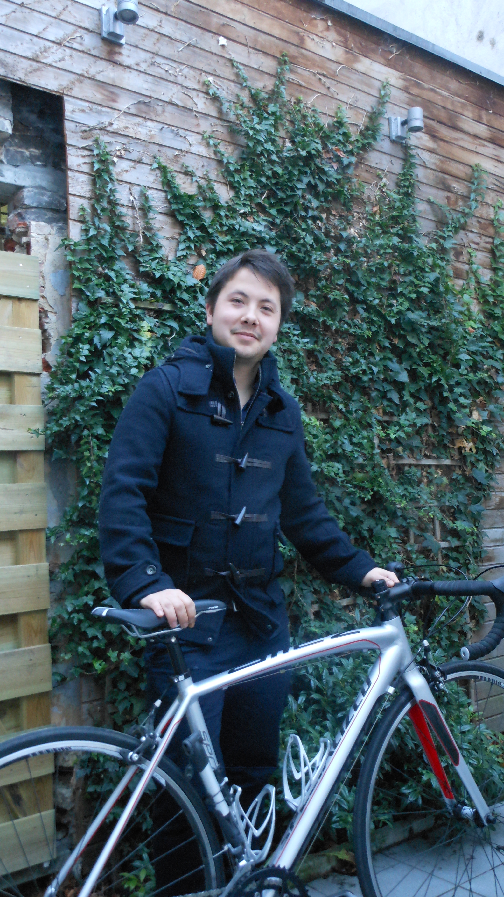

Hobby's
De "koers" is passie voor mij en dat zowel op het scherm als buiten op de weg. Mijn zondagen in het voorjaar zijn ingepalmd door vaste waarden zoals 'De Ronde van Vlaanderen', Parijs-Roubaix, Gent-Wevelgem, Milaan-San Remo. Na de voorjaarsklassiekers probeer ik het ook altijd zelf eens op de weg met mijn koersfiets. Met wekelijkse ritjes van een 100km probeer ik toch de conditie er wat in te houden.
